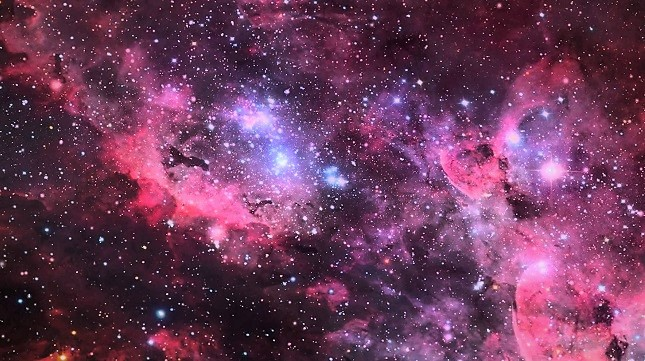
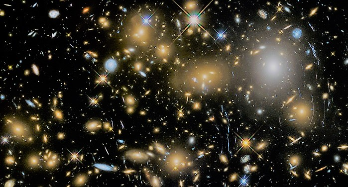
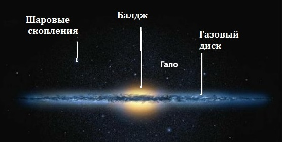
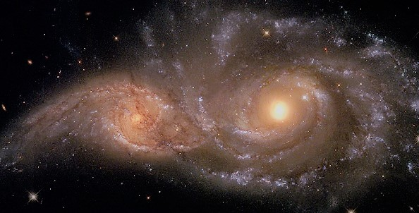
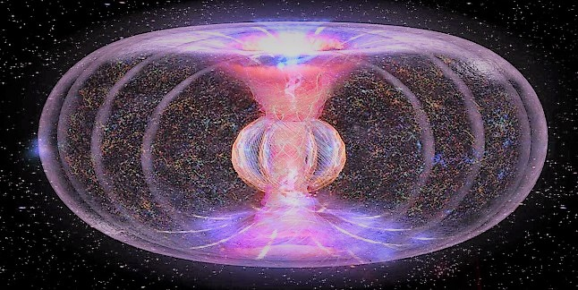

Из чего состоит наша Вселенная?
Содержание
- Устройство Вселенной
- Структура галактики
- Свойства галактик
- Форма Вселенной
Безусловно, устройство Вселенной многообразно. В её состав входят не простые
частицы, а целые структуры и
объединения.
К тому же, связь всех элементов превращает Вселенную в то, что мы наблюдаем.

Вселенная
Устройство Вселенной
Установлено, что во Вселенной великое множество галактик. На данный момент их
количество около 100 миллиардов. И это
только в наблюдаемой нами части.
На самом деле практически все галактики объединены в группы. К тому же,
существуют галактические скопления. В которых
собраны сотни систем. Помимо
этого, обнаружены сверхскопления с тысячами галактик в своём составе.

Сверхскопление галактик
Галактика это связанная силой гравитации система.
По определению, галактики состоят из:
- Планет, звёзд, чёрных дыр — 1%,
- Межзвёздный газ и пыль-от 10 до 30%,
- Тёмная материя — остальная основная масса.
Но есть и свободное место в пространстве, которое называют войд. В них
отсутствуют звёзды, и плотность материи менее
одной десятой от характерной для Вселенной.
Войд (пустота Вселенной)
Структура галактики
Человека всегда интересовало, как устроена Вселенная. Бесспорно, структура и
масштабы Вселенной удивляют и завораживают.
Ведь это неимоверно красивейшее
зрелище.
На самом деле, несмотря на разнообразие звёздных объединений, выделена их общая структура.
Ядро является центром. Это как сердце галактики и отдельной галактики в одном.
Можно сказать, что сила галактики
заключена в нём.

Структура галактики
Диск включает в себя основное количество газа, пыли и звёзд.
Балдж представляет собой часть в центре. Это внутренний и очень яркий элемент
галактики.
Гало это внешняя часть сферы, которая плавно переходит от балджа.
Рукава имеются не во всех галактиках. Это структура из молодых звёзд и газа.
Могут быть в разной степени закрученными.
Бар или перемычка является плотным формированием из газа и звёзд.
Свойства галактик
Сейчас, насколько это возможно изучив галактики, их разделяют на различные виды и классы.
Более того, установили взаимодействие таких космических комплексов. Они могут влиять друг на друга.
Но с условием
небольшого расстояния между ними. Кроме того, в зависимости от их массы и размеров.
Именно взаимосвязь между галактиками может привести к их слиянию.

Слияние двух галактик
Форма Вселенной
Вопрос о форме и размере Вселенной один из загадочных и неоднозначных. Потому
как однозначного ответа просто нет. Учёные
выдвигают разные гипотезы, но
подтверждения им не найдено.
Разумеется, что изучение пространства продолжается.
Вероятно, когда-нибудь мы узнаем, какой формы наш мир.

Предполагаемая форма Вселенной
Вселенная как живой организм, растёт и развивается. Правда, по своим правилам и законам.
Люди более или менее определили состав и физику Вселенной. К тому же, мы немного разобрались
в системе и устройстве
Вселенной. Но остаётся много загадок и тайн, которые,
возможно, мы сможем постичь в будущем.